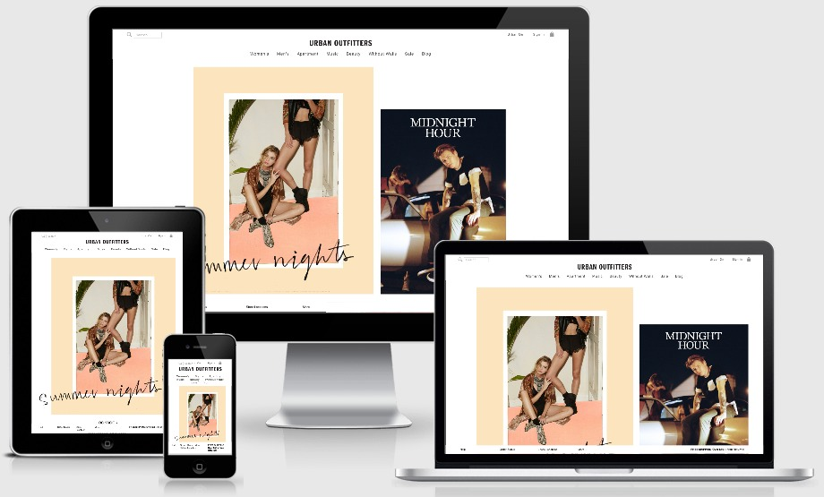

Responsive Layout
Using Compass/SASS
Presented by Thomas Britton / Github: tmbritton
What is Responsive Design?
Responsive web design (RWD) is a web design approach aimed at crafting sites to provide an optimal viewing experience—easy reading and navigation with a minimum of resizing, panning, and scrolling—across a wide range of devices (from mobile phones to desktop computer monitors).
According to Wikipedia
So this:
Not this:
What's SASS?
SASS
Syntactically Awesome Style Sheets
Sass is an extension of CSS that adds power and elegance to the basic language. It allows you to use variables, nested rules, mixins, inline imports, and more, all with a fully CSS-compatible syntax. Sass helps keep large stylesheets well-organized, and get small stylesheets up and running quickly, particularly with the help of the Compass style library.
Let's take a look at some of the features.
Variables
$font-stack: Helvetica, sans-serif;
$primary-color: #333;
body {
font: 100% $font-stack;
color: $primary-color;
}
Renders as:
body {
font: 100% Helvetica, sans-serif;
color: #333;
}
Nesting
nav {
ul {
margin: 0;
padding: 0;
list-style: none;
}
li { display: inline-block; }
a {
display: block;
padding: 6px 12px;
text-decoration: none;
}
}
Renders as:
nav ul {
margin: 0;
padding: 0;
list-style: none;
}
nav li {
display: inline-block;
}
nav a {
display: block;
padding: 6px 12px;
text-decoration: none;
}
Partials
You can create partial Sass files that contain little snippets of CSS that you can include in other Sass files. This is a great way to modularize your CSS and help keep things easier to maintain...
...as long as you have a structure when you begin and your team adheres to coding standards.
Import
CSS has an import option that lets you split your CSS into smaller, more maintainable portions. Sass builds on top of the current CSS @import but instead of loading a file on the front-end, Sass will take the file that you want to import and combine it with the file you're importing into so you can serve a single CSS file to the web browser.
Let's say you have a couple of Sass files, _reset.scss and base.scss. We want to import _reset.scss into base.scss.
// _reset.scss
html,
body,
ul,
ol {
margin: 0;
padding: 0;
}
// base.scss
@import 'reset';
body {
font-size: 100% Helvetica, sans-serif;
background-color: #efefef;
}
Renders as:
html, body, ul, ol {
margin: 0;
padding: 0;
}
body {
background-color: #efefef;
font-size: 100% Helvetica, sans-serif;
}
Mixins
A mixin lets you make groups of CSS declarations that you want to reuse throughout your site. You can pass in values to make your mixin more flexible.
@mixin border-radius($radius) {
-webkit-border-radius: $radius;
-moz-border-radius: $radius;
-ms-border-radius: $radius;
border-radius: $radius;
}
.box { @include border-radius(10px); }
Renders as:
.box {
-webkit-border-radius: 10px;
-moz-border-radius: 10px;
-ms-border-radius: 10px;
border-radius: 10px;
}
Operators
Sass has a handful of standard math operators like +, -, *, /,
and %.
.container { width: 100%; }
article[role="main"] {
float: left;
width: 600px / 960px * 100%;
}
aside[role="complimentary"] {
float: right;
width: 300px / 960px * 100%;
}
We've created a very simple fluid grid, based on 960px. Operations in Sass let us do something like take pixel values and convert them to percentages.
Renders As:
.container {
width: 100%;
}
article[role="main"] {
float: left;
width: 62.5%;
}
aside[role="complimentary"] {
float: right;
width: 31.25%;
}
What's Compass?
Compass is a Sass framework, designed to make the work of styling the web smooth and efficient. Much like Rails as a web application framework for Ruby, Compass is a collection of helpful tools and battle-tested best practices for Sass.
So what's that get us?
- Handy built-in Mixins
- Community-made Ruby Gems
- Compass command line utility
There's also GUIs for those so inclined.
The Built-in Mixins
The Compass mixins are divided into categories that can be imported as needed
The Built-in Mixins
The Compass mixins are divided into categories that can be imported as needed
-
Reset
This module applies the global reset to your stylesheet by simply importing it.
-
Typography
The Compass Typography module provides some basic mixins for common text styling patterns.
-
Utilities
The Compass Utilities module provides some basic mixins for common styling patterns.
Vertical Slides
Slides can be nested inside of other slides, try pressing down.
Basement Level 1
Press down or up to navigate.
Basement Level 2
Cornify

Basement Level 3
That's it, time to go back up.
Slides
Not a coder? No problem. There's a fully-featured visual editor for authoring these, try it out at http://slid.es.
Point of View
Press ESC to enter the slide overview.
Hold down alt and click on any element to zoom in on it using zoom.js. Alt + click anywhere to zoom back out.
Works in Mobile Safari
Try it out! You can swipe through the slides and pinch your way to the overview.
Marvelous Unordered List
- No order here
- Or here
- Or here
- Or here
Fantastic Ordered List
- One is smaller than...
- Two is smaller than...
- Three!
Transition Styles
You can select from different transitions, like:
Cube -
Page -
Concave -
Zoom -
Linear -
Fade -
None -
Default
Themes
Reveal.js comes with a few themes built in:
Default -
Sky -
Beige -
Simple -
Serif -
Night
Moon -
Solarized
* Theme demos are loaded after the presentation which leads to flicker. In production you should load your theme in the <head> using a <link>.
Global State
Set data-state="something" on a slide and "something"
will be added as a class to the document element when the slide is open. This lets you
apply broader style changes, like switching the background.
Custom Events
Additionally custom events can be triggered on a per slide basis by binding to the data-state name.
Reveal.addEventListener( 'customevent', function() {
console.log( '"customevent" has fired' );
} );
Slide Backgrounds
Set data-background="#007777" on a slide to change the full page background to the given color. All CSS color formats are supported.
Image Backgrounds
<section data-background="image.png">Repeated Image Backgrounds
<section data-background="image.png" data-background-repeat="repeat" data-background-size="100px">Background Transitions
Pass reveal.js the backgroundTransition: 'slide' config argument to make backgrounds slide rather than fade.
Background Transition Override
You can override background transitions per slide by using data-background-transition="slide".
Clever Quotes
These guys come in two forms, inline:
“The nice thing about standards is that there are so many to choose from”
and block:
“For years there has been a theory that millions of monkeys typing at random on millions of typewriters would reproduce the entire works of Shakespeare. The Internet has proven this theory to be untrue.”
Pretty Code
function linkify( selector ) {
if( supports3DTransforms ) {
var nodes = document.querySelectorAll( selector );
for( var i = 0, len = nodes.length; i < len; i++ ) {
var node = nodes[i];
if( !node.className ) {
node.className += ' roll';
}
}
}
}
Courtesy of highlight.js.
Intergalactic Interconnections
You can link between slides internally, like this.
Fragmented Views
Hit the next arrow...
... to step through ...
any type- of view
- fragments
Fragment Styles
There's a few styles of fragments, like:
grow
shrink
roll-in
fade-out
highlight-red
highlight-green
highlight-blue
current-visible
highlight-current-blue
Spectacular image!

Export to PDF
Presentations can be exported to PDF, below is an example that's been uploaded to SlideShare.
Take a Moment
Press b or period on your keyboard to enter the 'paused' mode. This mode is helpful when you want to take distracting slides off the screen during a presentation.